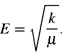

Effective masses
Another way of regarding the effective mass of a mode can be derived from
consideration of the simple harmonic oscillator:

Diagonalization of the mass-weighted Hessian yields the energies, and from the
normal coordinates the force-constants can readily be derived. From these two
quantities, the effective mass can readily be calculated:
For a homonuclear diatomic, the effective mass calculated this way is equal
to the mass of one atom.